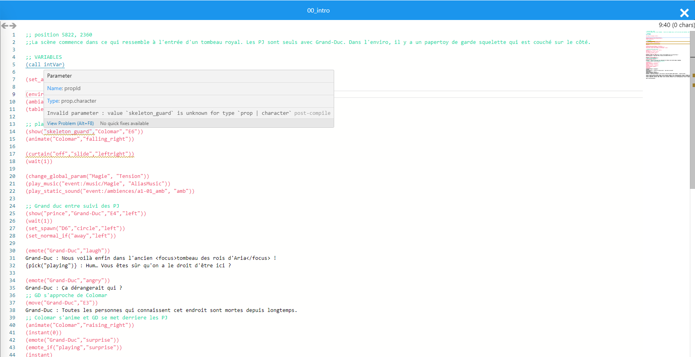

Developed in Typescript with React and Electron, Ludoframe is a Ludogram tool for which I was the main developer. With the philosophy of improving the production of narratives designer in the Worlds of Aria project, the idea was to offer a nodal editor to visualize a written story and test it live on Unity. and test it live on Unity. Using a language language that I still use today, it also offers autocompletion autocompletion and code analysis.
Now used by the whole studio, this project was a real revelation for me in terms of my passion for tool development.
This tool is completly closed source, but here's some screenshots I have the right to share :
